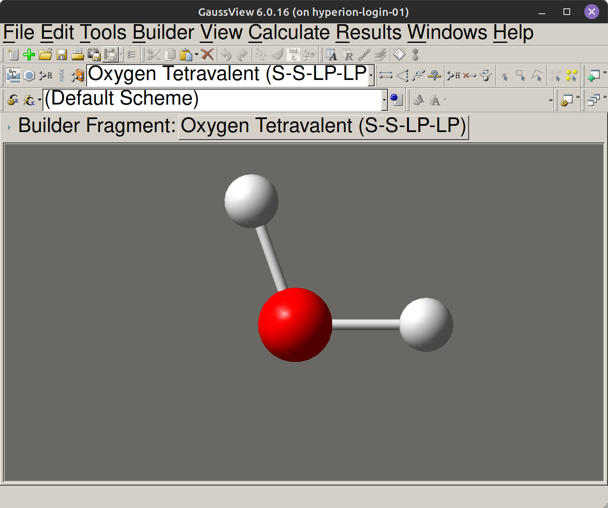
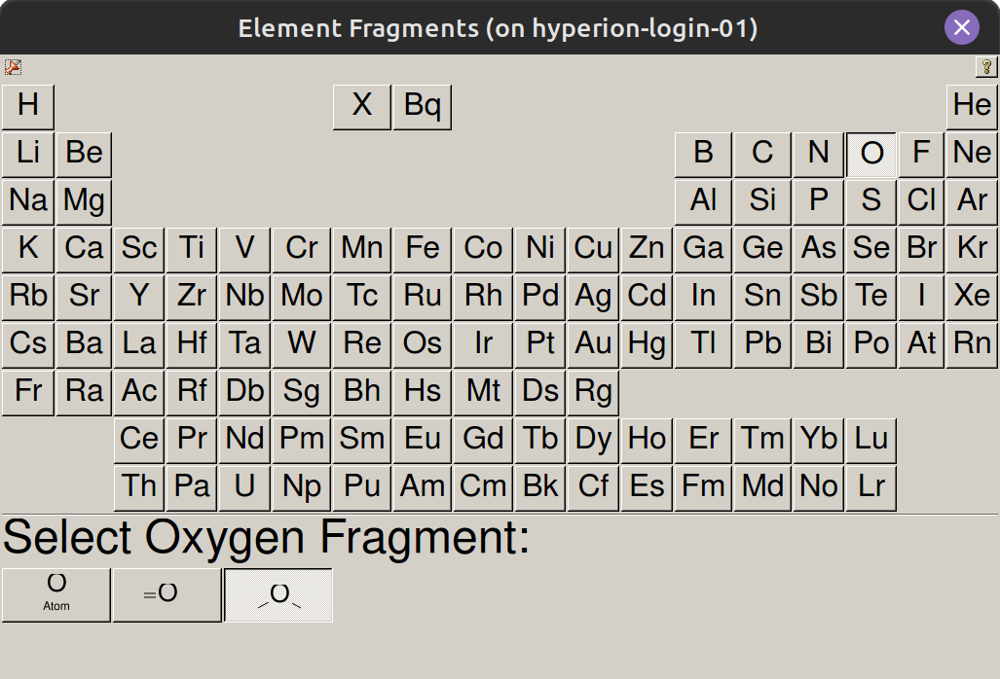
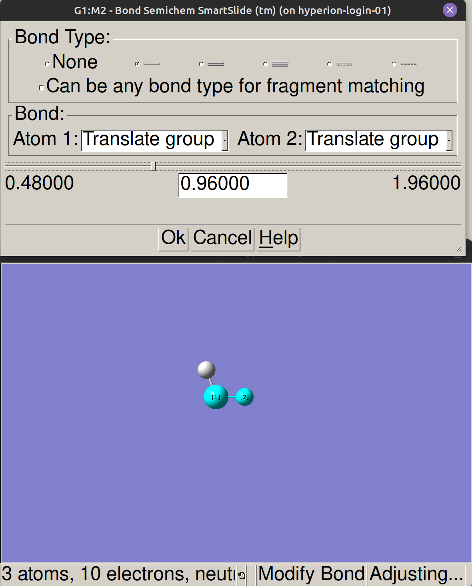
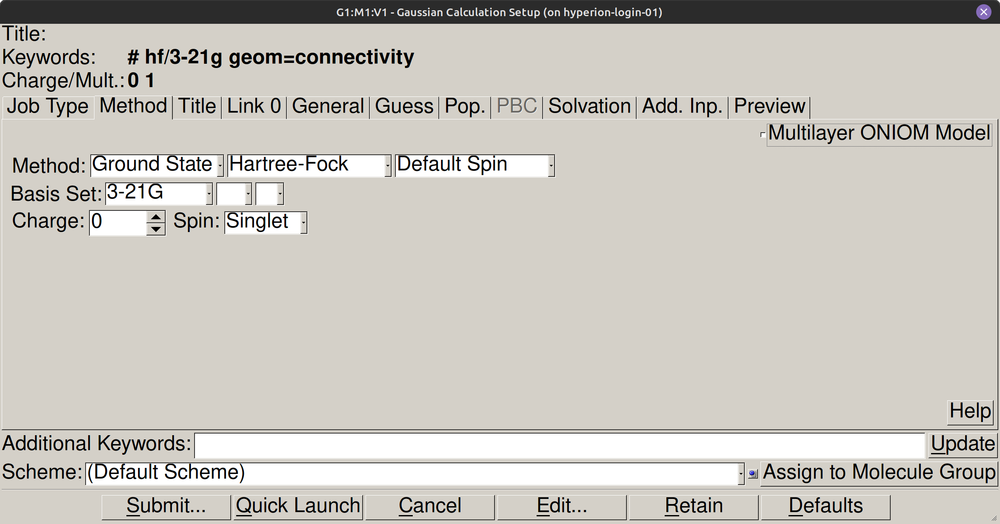
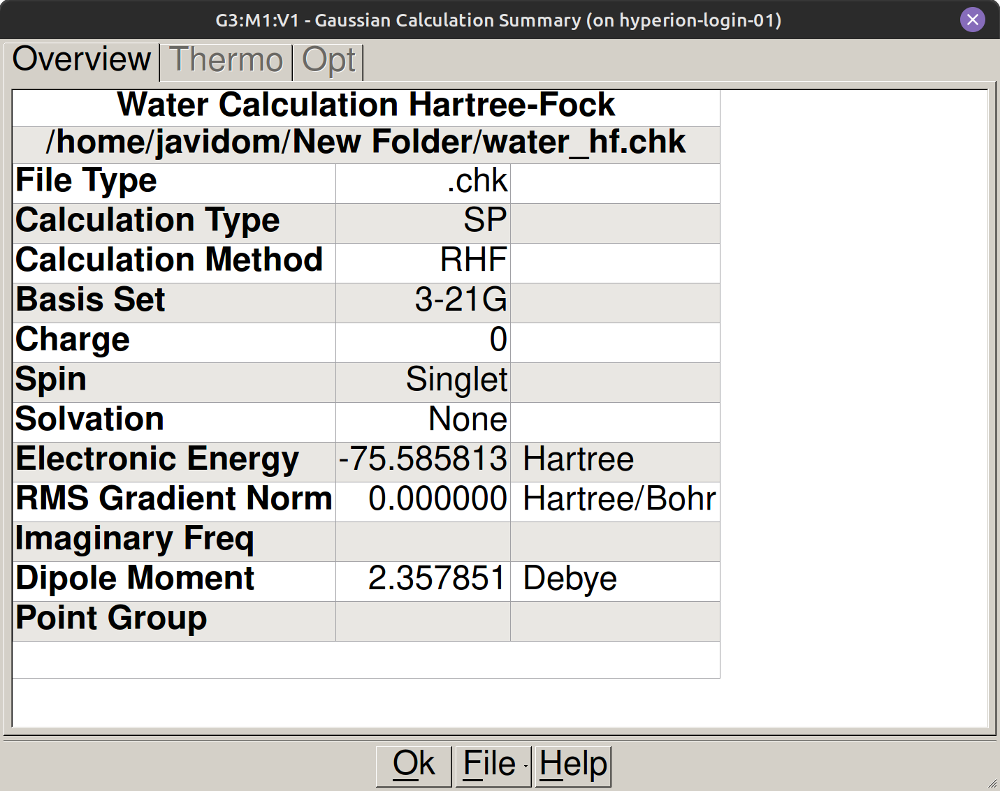
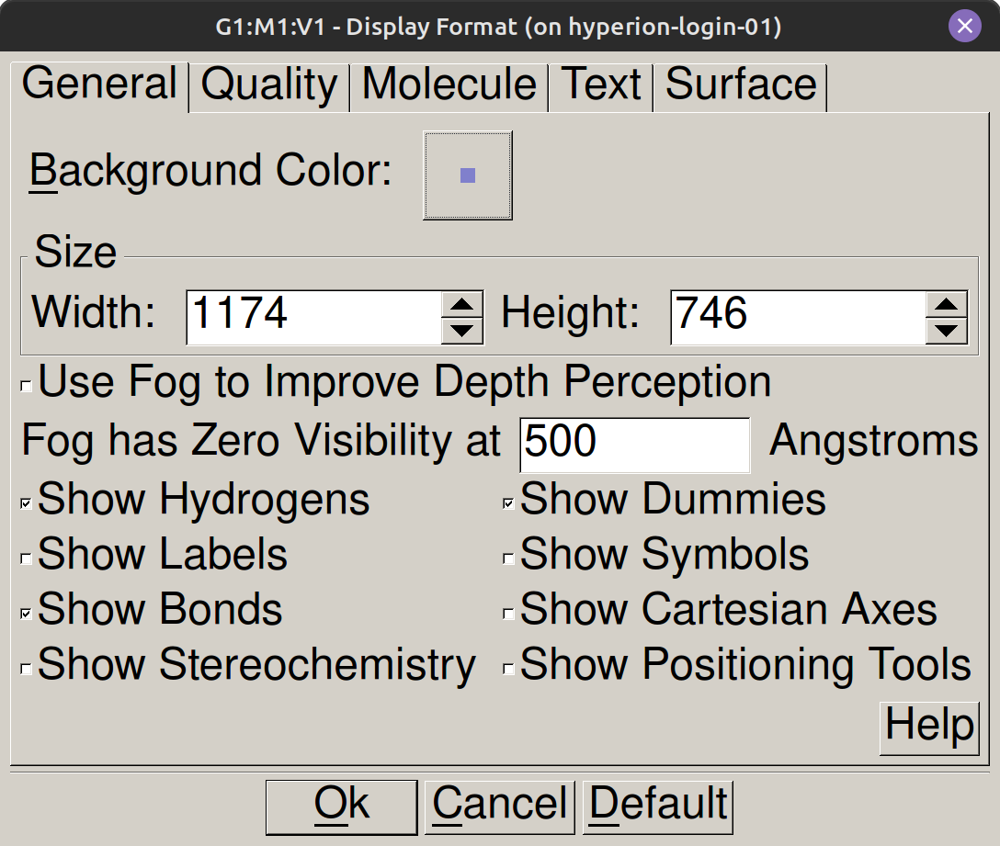

Introducción a GaussView#
Introducción#
Para hacer un cálculo en Gaussian, primero hay que decirle al programa cómo está dispuesta la molécula en el espacio. GaussView es la interfaz gráfica que facilita esta tarea: con ella construimos el modelo molecular, configuramos el cálculo y visualizamos los resultados sin necesidad de editar archivos a mano.
Abrir GaussView#
GaussView se abre desde el escritorio del ordenador del aula o desde el menú de aplicaciones del sistema.
La interfaz: qué ves al abrir#
La interfaz de GaussView tiene cuatro áreas de trabajo. En la parte superior encontramos la barra de menús, con las herramientas de configuración y visualización. Debajo está la barra de herramientas, con iconos de acceso rápido. El área central es la ventana de visualización tridimensional, donde construimos, desplazamos y rotamos la molécula con el ratón. Un panel inferior muestra información en tiempo real sobre los átomos seleccionados, distancias interatómicas y el estado del cálculo.


Construir una molécula#
Para construir una molécula en GaussView, pulsamos el icono del átomo en la barra de herramientas (Builder palette, accesible también desde View → Builder) para abrir el panel de fragmentos y elementos químicos. Seleccionamos el elemento deseado y hacemos clic con el botón izquierdo en la ventana central para situar el átomo. Al añadir átomos adicionales cerca de los existentes, el programa genera los enlaces de forma automática a partir de los radios covalentes estándar. Para el agua (\(\text{H}_2\text{O}\)), basta con colocar un átomo de oxígeno central y enlazar dos hidrógenos en posiciones angulares aproximadas. Las distancias exactas se ajustarán durante la optimización de geometría en Gaussian, así que el dibujo inicial solo necesita representar la conectividad química.


Advertencia
No hacer doble clic accidental sobre el fondo: duplica átomos sin avisar.
Corregir errores y deshacer#
Para deshacer la última acción usamos Edit → Undo o Ctrl+Z. Si queremos eliminar un átomo o fragmento concreto, lo seleccionamos con el ratón y pulsamos Supr. Para limpiar la ventana por completo podemos usar Edit → Select All seguido de Supr, o abrir un área de trabajo nueva desde File → New.
Añadir hidrógenos automáticamente#
La opción Edit → Add Hydrogens completa automáticamente los hidrógenos implícitos necesarios para saturar la valencia del esqueleto dibujado. Conviene revisar siempre la estructura resultante, ya que la asignación automática puede diferir del estado de protonación deseado.
Moverse por la molécula#
Para inspeccionar la estructura, rotamos la vista manteniendo presionado el botón izquierdo mientras desplazamos el cursor. El zoom lo ajustamos con la rueda del ratón. Si perdemos de vista la molécula, usamos el botón de centrado de la barra de herramientas. Con estos tres movimientos orientamos la geometría con soltura durante el modelado y la revisión de resultados.
Ver y ajustar geometría#
Para consultar o ajustar una distancia de enlace seleccionamos la herramienta de enlace (Modify Bond, icono con dos esferas enlazadas en la barra de herramientas) o la herramienta de consulta (Inquire, icono con el interrogante ?) y hacemos clic en los dos átomos en el visor 3D. La ventana emergente muestra la distancia actual en ángstroms y permite verificar la conectividad antes de lanzar el cálculo.


Abrir un archivo existente#
Para abrir un archivo existente accedemos al menú File → Open. Los formatos habituales son .gjf (archivos de entrada) y .log (salidas generadas por Gaussian), lo que nos permite retomar el trabajo entre sesiones o analizar estructuras de referencia.
Configurar un cálculo#
El panel de configuración lo abrimos desde Calculate → Gaussian Calculation Setup. En la pestaña Job Type seleccionamos la tarea: energía puntual (Energy), optimización de geometría (Optimization) o cálculo de frecuencias (Frequency). La pestaña Method nos permite definir el nivel de teoría: el método mecanocuántico (Hartree-Fock, B3LYP…) y la base de funciones indicada en cada práctica. En Title Card introducimos una descripción breve sin caracteres especiales. Por último, en Charge & Multiplicity establecemos la carga neta y la multiplicidad de espín.
Advertencia
Revisar siempre la carga y la multiplicidad antes de pulsar Submit. Un error aquí invalida todo el cálculo.


Lanzar el cálculo#
Una vez configurados los parámetros, lanzamos el cálculo en local pulsando Submit. GaussView abre una ventana de seguimiento con las líneas de salida en tiempo real. La duración oscila entre unos segundos para moléculas sencillas con bases mínimas y varios minutos para sistemas mayores o métodos con correlación electrónica. No hace falta hacer nada más hasta que el cálculo finalice.
Verificar que el cálculo ha terminado bien#
Al terminar el cálculo, la última línea del archivo de salida debe contener Normal termination of Gaussian 16. Si en su lugar aparece Error termination, el cálculo no ha terminado correctamente. Las causas más habituales son una geometría inicial inadecuada, una configuración incompatible o haber superado el límite de memoria asignado.
Atención
Antes de anotar ningún resultado, comprueba siempre que el cálculo ha terminado correctamente buscando la línea: Normal termination of Gaussian 16
Ver los resultados#
Los resultados los consultamos por dos vías. Para visualizar la geometría optimizada, la densidad electrónica o los orbitales moleculares, usamos el menú Results de GaussView. La opción Results → Summary presenta un cuadro resumen con el método, la base, la energía electrónica total calculada y magnitudes como el momento dipolar. Para extraer valores numéricos con todo su detalle, es más directo abrir el archivo .log con un editor de texto y buscar las líneas pertinentes. En el guión de cada práctica indicamos qué término buscar y cómo anotar cada valor.


Guardar el trabajo#
El archivo de entrada lo guardamos desde File → Save con la extensión .gjf. Conviene usar una nomenclatura clara que identifique la molécula y el nivel de teoría (por ejemplo, h2o_b3lyp_6311g.gjf), lo que facilita organizar los cálculos durante la sesión.
Bibliografía#
Gaussian 16, Revision A.03, M. J. Frisch, G. W. Trucks, H. B. Schlegel et al., Gaussian, Inc., Wallingford CT, 2016.
Personalizar colores y apariencia
El color de fondo lo modificamos desde el menú View → Display Format. En la pestaña General, hacemos clic sobre el recuadro situado junto a Background Color y seleccionamos el color blanco. En esa misma ventana podemos personalizar el tamaño de las esferas atómicas en Atom Size y su esquema de colores en Atom Colors. Estos ajustes no alteran los cálculos, pero usar fondo blanco facilita obtener capturas nítidas para la memoria de prácticas.

